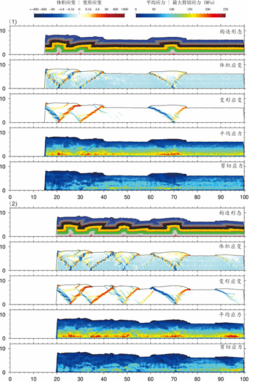

论文下载：
冯彦杰 (2019). 多滑脱层褶皱冲断构造分析模拟-以龙门山断层马角坝断裂为例. 本科论文. 南京大学. 提取码 zdem
题目：多滑脱层褶皱冲断构造分析模拟-以龙门山断层马角坝断裂为例
作者：冯彦杰
摘要
本文基于离散元数值模拟技术设计了多组二维水平挤压实验，模拟了多滑脱层褶皱冲断带的形成与演化过程，分析了多滑脱层褶皱冲断带变形机制，取得了如下认识：
- 膏盐滑脱层的受力形变主要为塑形流变，常见强烈体应变和剪应变，但内 部 不发育断层。
- 滑脱层的位置、厚度会影响褶皱冲断带应力应变的分布，其中，基底滑脱层是影响整体构造演化的主要因素。
- 离散元数值模拟方法能在一定程度 上定量解释褶皱冲断构造演化过程与变形机制，有较好的发展前景。
关键词：滑脱层；离散元模型；褶皱冲断带；构造变形
目录：
- 第一章 前言
- 1.1 研究意义和选题依据
- 1.2 构造变形定量化研究现状
- 1.3 创新点
- 第二章 方法概论
- 2.1 离散元方法简介
- 2.2 VBOX软件简介
- 2.3 Hertz-Mindlin接触模型介绍
- 2.4 应力应变分析
- 第三章 数值模拟实验
- 3.1 实验一 无膏盐层
- 3.2 实验二 底部膏盐层
- 3.3 实验三 含一条膏盐间层
- 3.4 实验四 含两条膏盐间层
- 3.5 实验五 改变膏盐层厚度
- 3.6 实验六 边界延长实验
- 3.7 实验七 改变滑脱层的密度
- 第四章 讨论：与龙门山断层马角坝断裂的对比
- 第五章 结论
- 参考文献
结论
根据实验结果，结合实际情况分析，我们可以得出以下主要结论：
- 膏盐滑脱层自身变形主要是塑形流变，内部不发育断层，可见强烈的体应变和剪应变。
- 滑脱层的厚度、密度、分布会显著影响应力应变的传播与分布。水平向传播上滑脱层会让应力应变更容易传播；垂向上的滑脱层是构成变形垂向分层的关键因素，滑脱层上下有明显不同的构造变形模式。双滑脱层的存在会加快应力应变的传播速度，同时也会影响传播的最远距离。
- 四川龙门山断层马角坝地区的复杂构造，可能为双滑脱层影响，受重力滑脱和区域水平挤压两期先后不同的构造地质运动的驱动而形成。
- VBOX软件可以较好用于模拟褶皱冲断构造变形，模拟结果与实际地质构造有较好的吻合度。同时VBOX软件还搭载了其他多种基础模型数据，加上其开放的多端口设计和方便高效的并行运算设计，在构造地质模拟上有较好的潜力，随着计算软硬件设施不断更新，构造数值模拟会有更广阔的发展空间。
